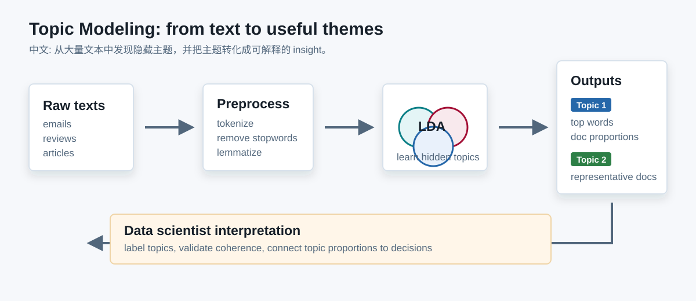
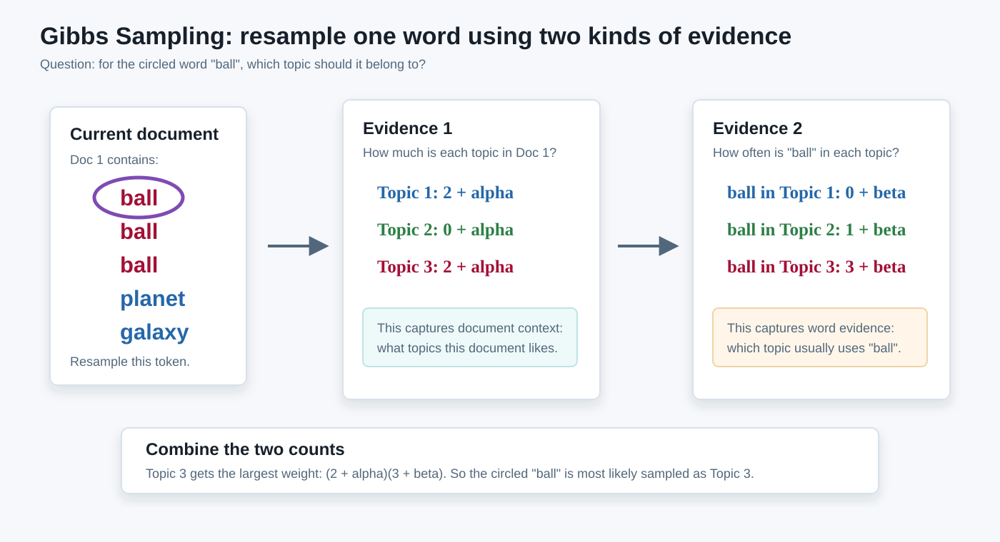
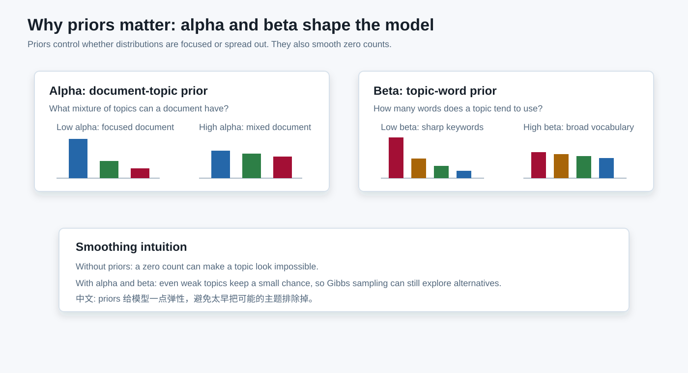
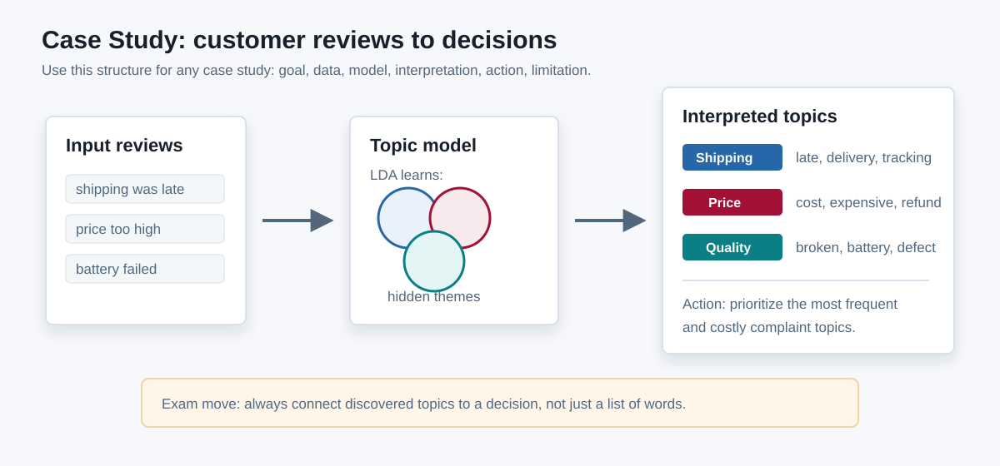
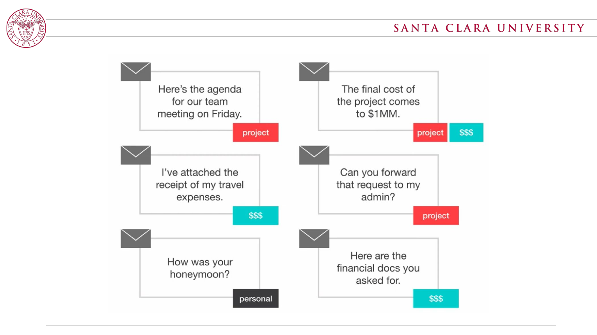
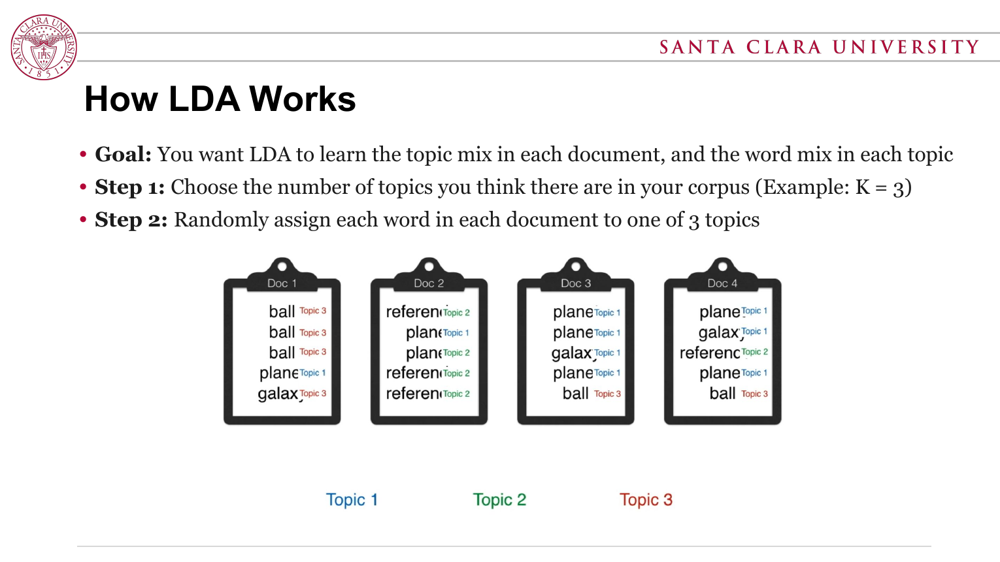
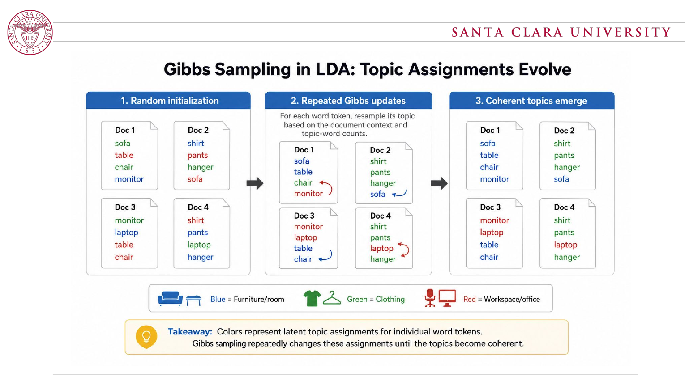
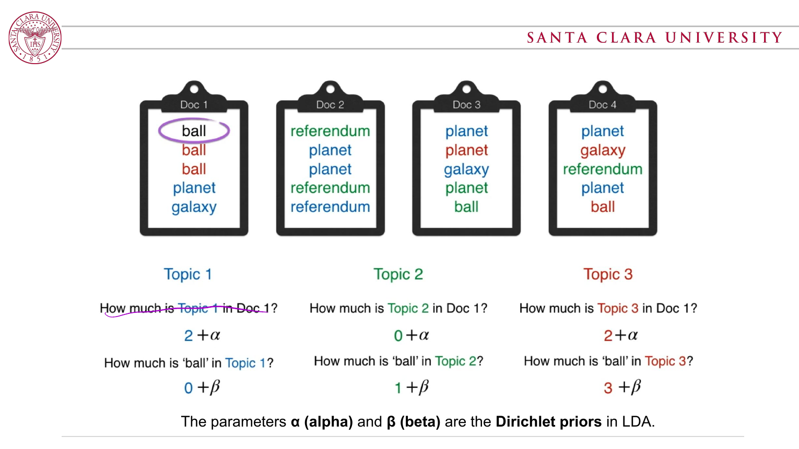
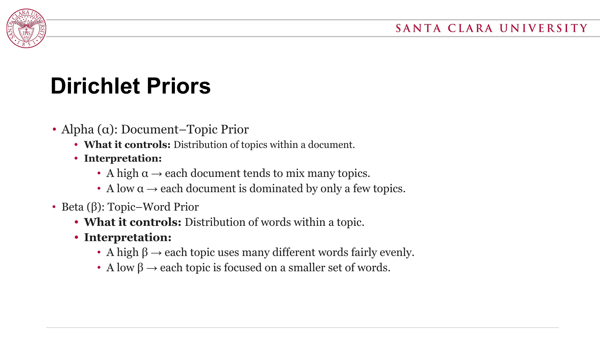

1. What Topic Modeling Is
理解
Topic modeling 不是直接分类，而是在 unlabeled text 里发现隐藏主题。一个 document 可以同时包含多个 topics。
Exam phrase
Topic modeling is an unsupervised method for discovering latent themes in a collection of documents.
中文
Topic modeling 用无监督方法从大量文本里发现隐藏主题；LDA 把每个 document 看成 topics 的 mixture，把每个 topic 看成 words 的 probability distribution。
English
Topic modeling is an unsupervised NLP technique for discovering latent themes in a corpus. LDA models each document as a mixture of topics and each topic as a probability distribution over words.
理解
Topic modeling 不是直接分类，而是在 unlabeled text 里发现隐藏主题。一个 document 可以同时包含多个 topics。
Exam phrase
Topic modeling is an unsupervised method for discovering latent themes in a collection of documents.
理解
它从 random assignment 开始，然后不断重新给每个 word 选择 topic。选择依据是 document-topic count 和 topic-word count。
Exam phrase
Gibbs sampling iteratively resamples each word's topic based on how common the topic is in the document and how common the word is in the topic.
理解
alpha 和 beta 不只是公式里的符号。它们控制模型偏向 broad topics/documents 还是 focused topics/documents，并避免 zero probability。
Exam phrase
Priors control the shape of topic mixtures and word distributions, while smoothing counts so the model does not become too rigid.
理解
应用题要从 data scientist 视角答：目标是什么、文档是什么、怎么建模、怎么解释、如何验证、如何行动。
Exam phrase
A case study answer should connect the model output back to a real decision or insight.




中文
一种 NLP / ML 学习技术，用来 uncover latent thematic structures within a collection of texts。
English
Topic modeling discovers hidden themes in a collection of documents by learning patterns of word co-occurrence.
中文
Latent Dirichlet Allocation。它是 probabilistic generative model，不是像 LSI 那样主要走 linear algebra。
English
LDA is a probabilistic generative model, unlike LSI, which is based more on linear algebra.
中文
每个 document 是少量 topics 的组合；每个 word 来自这个 document 里的某一个 topic。
English
Each document is a mixture of topics, and each word is generated from one of the document's topics.
khuya / yachay / alliku / pachamama 这种 Quechua 词的文档。即使你完全不懂这门语言，LDA 仍然可以根据 word co-occurrence 把它们聚成 topic。中文
LDA 一开始会 randomly assign 每个 word token 到某个 topic。之后反复检查每个 word，并根据两个证据重新 sample topic。
English
LDA starts with random topic assignments. Gibbs sampling then repeatedly revisits each word token and resamples its topic using document-topic and topic-word evidence.
为什么是乘法 / LDA conditional independence (slides 手写板)
LDA assumption: Once a topic z is known, the document d no longer directly affects the word w — so P(w | z, d) 简化为 P(w | z)。这就是为什么 Gibbs 权重写成两个 count 的乘积：一个对应 P(z|d)（topic 在文档里的常见度），一个对应 P(w|z)（word 在 topic 里的常见度）。
Slide intuition: two pieces of evidence
中文: 一个 topic 在当前 document 里越常见、这个 word 在该 topic 里越常见，这个 word 就越可能被分到该 topic。English: A topic is more likely if it is common in the current document and the word is common in that topic.
Count version used in the slides
nd,knk,wα, βNormalize the weights into a categorical distribution
Slides 原话: The new topic is sampled from a categorical distribution whose probabilities are proportional to the Gibbs weights for each topic. 中文: 先算每个 topic 的 weight，归一化成 categorical distribution，再从中 sample 一个新 topic（不是直接选最大的，所以 blue / green 仍有小概率被选中）。
Fuller LDA Gibbs form, if denominator is expected
-i 表示重采样时先排除当前 word token；V 是 vocabulary size。考试如果只按 slides，讲清楚两个 count 的直觉通常就够。
(2 + alpha)(0 + beta)
(0 + alpha)(1 + beta)
(2 + alpha)(3 + beta)
几何直觉 / Geometric view (slides page 37)
每个矩形的面积 ∝ 该 topic 被抽到的概率。Topic 3 的矩形最大，所以 "ball" 大概率被分到 Topic 3；但蓝色和绿色仍有非零面积（α、β 提供的 smoothing），保证它们仍可能被抽到。Slides 原话: "To give blue and green a small chance: Play a probability game — pick a topic (color) with probability proportional to the product of the two numbers."
English
Alpha controls how concentrated or spread out the topic distribution is within a document.
English
Beta controls how concentrated or spread out the word distribution is within a topic.
English
Define the document unit and preprocess the corpus by cleaning, tokenizing, normalizing words, and optionally adding meaningful bigrams.
English
Train LDA, then inspect both top words and representative documents to understand each topic.
English
Use domain knowledge to label topics and use topic proportions for classification, trend analysis, recommendation, or feedback prioritization.
English
Communicate that topics require human interpretation and are sensitive to K, priors, preprocessing choices, and text quality.
考试里不要说 K 随便选。要说 data scientist 会尝试多个 K，并结合 quantitative metrics 和 human interpretability。
English
A data scientist should try multiple values of K and choose a model whose topics are coherent, interpretable, and useful for the task.
English
Validate topics using coherence, human interpretability, representative documents, stability, and practical usefulness.





场景
公司有几千条产品评论，想知道用户主要抱怨什么。
How to use TM
Treat each review as a document, train LDA, label topics such as shipping, price, quality, or support, and track topic proportions by product or time period.
Decision: prioritize fixes for the topics with high frequency and negative sentiment.
场景
分析一段时间内的大量新闻，想知道公众关注点如何变化。
How to use TM
Treat each article as a document, discover topics such as economy, health, politics, or sports, then plot topic proportions over time.
Decision: identify emerging themes and explain changes in media attention.
场景
客服系统有大量 ticket，团队想自动总结常见问题。
How to use TM
Use each support ticket as a document, identify topics like login issues, billing problems, bugs, or feature requests, and route tickets based on dominant topics.
Decision: improve routing, staffing, and product backlog prioritization.
场景
研究者想快速理解一个领域里有哪些主要研究方向。
How to use TM
Treat abstracts as documents, discover research themes, inspect representative papers, and track how topics grow or decline across years.
Decision: summarize a field, find related papers, or identify research gaps.
中文
可以用于文档分类、推荐、总结、趋势分析和客户反馈分析。
English
Topic modeling can reveal hidden structure in unlabeled text and scale to large document collections.
English
The main challenges are interpretability, parameter sensitivity, and dependence on text quality.
如果题目问 “How would you analyze a collection of documents using topic modeling?” 可以这样答：
中文理解
主题建模是一种无监督文本分析方法，用来发现一批文档中隐藏的主题结构。
English answer
Topic modeling is an unsupervised NLP technique that discovers hidden themes in a collection of documents. It represents documents as mixtures of topics and topics as distributions over words.
中文理解
LDA 假设每个文档由多个主题混合而成，每个词由文档中的某个主题生成。
English answer
LDA assumes each document contains several topics and each word is generated from one of those topics. The model estimates both the topic mixture in each document and the word mixture in each topic.
中文理解
先随机给词分配主题，再反复重新采样。依据是 topic 在 document 中多常见，以及 word 在 topic 中多常见。
English answer
It starts with random topic assignments. Then it repeatedly revisits each word and resamples its topic based on how common that topic is in the document and how common that word is in the topic. After many iterations, coherent topics emerge.
中文理解
alpha 管一个文档里主题分布的分散程度；beta 管一个主题里词分布的分散程度。
English answer
Alpha controls the document-topic distribution. High alpha means documents mix many topics; low alpha means documents focus on a few topics. Beta controls the topic-word distribution. High beta means broad topics; low beta means focused topics with fewer characteristic words.
中文理解
把每条 review 当成文档，清洗文本，训练 LDA，查看 top words 和代表评论，命名主题，再用 topic proportions 找主要问题和趋势。
English answer
I would treat each review as a document, clean the text, train LDA with several K values, inspect top words and representative reviews, label topics like shipping, price, quality, or support, then track topic proportions by product or time period. I would validate topics with coherence and domain judgment, then use them to prioritize improvements.
中文理解
因为 LDA 描述了文档如何被生成：先选文档主题比例，再为每个词选主题，再从该主题中选词。
English answer
LDA is generative because it describes a process for how documents could be generated: first choose a topic mixture for a document, then for each word choose a topic from that mixture, and finally choose a word from that topic's word distribution.
中文理解
LDA 输出每个 topic 的高概率词，以及每个 document 的 topic proportion。
English answer
LDA produces topic-word distributions, which show the important words in each topic, and document-topic distributions, which show how much each topic appears in each document.
中文理解
好的 topics 应该 top words 一致、代表文档匹配、人能解释，并且对任务有帮助。
English answer
Useful topics should have coherent top words, representative documents that match the topic, meaningful human labels, and practical value for the goal such as summarization, recommendation, trend analysis, or customer feedback prioritization.
中文理解
K 太小会把不同主题混在一起；K 太大会让主题过碎、重复、难解释。
English answer
If K is too small, different themes may be merged into broad, vague topics. If K is too large, topics may become fragmented, repetitive, or hard to interpret.
中文理解
注意 preprocessing、噪声文本、短文本、参数敏感性，并且不要把 topic label 当成绝对真相。
English answer
A data scientist should be careful about preprocessing choices, noisy text, short documents, parameter sensitivity, and over-interpreting topics as objective truth. Topic labels require human judgment.
| Concept | What to say in the exam | Why it matters |
|---|---|---|
| Latent | Latent means hidden or not directly observed. | Topic labels are inferred, not given beforehand. |
| Topic | A topic is a probability distribution over words. | Top words help humans interpret and name topics. |
| Document | A document is a mixture of topics. | A document does not need to belong to only one class. |
| Gibbs sampling | Resample each word's topic using document-topic and topic-word counts. | This is how random assignments become coherent topics. |
| Alpha | Alpha controls how many topics appear in each document. | Low alpha means focused documents; high alpha means mixed documents. |
| Beta | Beta controls how many words appear in each topic. | Low beta means focused topics; high beta means broader topics. |
| Validation | Check coherence, representative documents, interpretability, and usefulness. | A model is only helpful if the topics make sense for the task. |
Topic modeling helps a data scientist explore unlabeled text by discovering latent themes. In LDA, documents are mixtures of topics and topics are distributions over words. Gibbs sampling iteratively improves word-topic assignments using document-topic and topic-word counts. The final topics must be interpreted, labeled, validated, and connected back to the original decision-making goal.